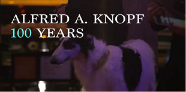
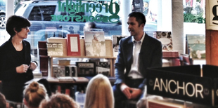

Creating the vehicles for communicating big ideas
communications and marketing strategy· web and interactive design ·
video production ·
podcasting ·
strategic messaging ·
branding ·
copywriting ·
multimedia for events
Video Production, Live Streaming, Event A/V, Photography
2015 Spring Forum
Seedco
Full-service A/V support for a fundraising luncheon and panel discussion. Services including: live streaming to a password-protected web platform of a two-camera video shoot of the event, parallel closed-circuit broadcast to the live audience, live sound and lighting, still photography, video post-production for the web.
Team
PRODUCTION LEAD, VIDEO POST-PRODUCTION:
David Hoffman
David Hoffman
STILL PHOTOGRAPHY:
Christian Pollock
Christian Pollock
WEB STREAMING:
Livestream
Livestream
AV PERSONNEL AND EQUIPMENT:
One Dream Sound
One Dream Sound
LIVE SOUND/ AV LEAD:
Dave Ferdinand
Dave Ferdinand
TECHNICAL DIRECTOR:
Doyle Ephraim
Doyle Ephraim
DIRECTOR OF PHOTOGRAPHY:
Benjamin Richards
Benjamin Richards
CAMERA OPERATOR:
Nathaniel Butler
Nathaniel Butler
LIGHTING DESIGNER:
Paul Jones
Paul Jones
Seedco 2015 Spring Forum

Podcast Series
Dementia Decoded
The New York Academy of Sciences
A five-part podcast series exploring the causes and effects of Alzheimer’s disease and other neurodegenerative dementias, some of the most widespread, devastating, and poorly understood conditions in the world. It features interviews with a broad cross-section of leaders in the field, including researchers, policymakers, clinicians, representatives from the pharmaceuticals industry, and people involved in care.
Team
PRODUCER, WRITER, HOST:
David Hoffman
David Hoffman
ADDITIONAL PRODUCTION:
Kerry Kastin
Kerry Kastin
SCIENTIFIC OVERSIGHT:
Cynthia Duggan
Cynthia Duggan
Season 1
Episode 1: A Special Illness
Episode 2: Plaques and Tangles
Episode 3: Decisions, Negotiations, and Choices
Episode 4: Fighting Forgetting
Episode 5: Fighting Forgetting
Website
DrBrianESmith.com
Website, featuring new messaging and photography, for a midtown Manhattan psychotherapy practice
Team
PRODUCTION LEAD, COPYWRITING:
David Hoffman
David Hoffman
GRAPHIC DESIGN:
Naz Sahin
Naz Sahin
PHOTOGRAPHY:
Christian Pollack
Christian Pollack
DEVELOPMENT:
Chuck Lin
Chuck Lin
Page 1: Home
Page 1: About
Page 1: Contact
Podcast Series
The Greenlight Bookstore Radio Hour
Greenlight Bookstore
New podcast series highlighting the best in current literature, featuring authors in conversation, reviews of noteworthy titles, and news about current releases. New episodes posted on the 1st and 15th of every month, beginning July 2014.
Team
PRODUCER, WRITER, HOST:
David Hoffman
David Hoffman
LIVE AUDIO ENGINEER:
Grant Goldberg
Grant Goldberg
ADDITIONAL ENGINEERING:
Humphrey Lynch and Frank Rocco for Trylon Sound
Humphrey Lynch and Frank Rocco for Trylon Sound
FEATURED EVENTS COORDINATED BY:
Jessica Stockton Bagnulo for Greenlight Bookstore
Jessica Stockton Bagnulo for Greenlight Bookstore
Video Series
Strengthening the STEM Pipeline
The New York Academy of Sciences
A series of videos commissioned by the New York Academy of Sciences to be presented at its 2012 fundraising gala, highlighting how Academy programming nurtures scientists at every stage of their lives and careers. Featuring interviews with distinguished Academy members and supporters representing wide cross-sections of academia, government, and the private sector.
Team
PRODUCER, DIRECTOR, ORIGINAL MUSIC:
David Hoffman
David Hoffman
CO-PRODUCER:
Andrew May
Andrew May
CINEMATOGRAPHER:
Horst Dieter Baum
Horst Dieter Baum
VIDEO EDITOR, ANIMATOR:
Nate Kim for Work Post
Nate Kim for Work Post
ADDITIONAL VIDEO EDITOR:
Paul Docherty
Paul Docherty
GRAPHIC DESIGNER:
Justine Seligman
Justine Seligman
AUDIO POST-PRODUCTION ENGINEER:
Jake Grupp For Sound Lounge
Jake Grupp For Sound Lounge
STILL PHOTOGRAPHER:
Bradford Gregory
Bradford Gregory
PRODUCTION ASSISTANTS:
Alexis Percival, Ashlei Dabney, Ariana Mygatt, Chris Hong
Alexis Percival, Ashlei Dabney, Ariana Mygatt, Chris Hong
Video
K-12 Education: Nurturing Scientific Curiosity, Laying a Foundation for the Future
Higher Education: Turning a Science Education into a Science Career
Professional Development: Joining a Community of Innovators
Global Outreach: Science Beyond the City
The Blavatnik Awards for Young Scientists
Podcast Series
A Thought For Food
The Sackler Institute for Nutrition Science at the New York Academy of Sciences
An audio podcast series, built on the model of the best of public radio, that presents the principles, history, and social context of nutrition science in an entertaining and accurate way. Broadcast as a part of the New York Academy of Sciences' Science & the City podcasts.
Team
PRODUCER, WRITER, HOST:
David Hoffman
David Hoffman
ORIGINAL MUSIC:
David Hoffman, Skin and Bones
David Hoffman, Skin and Bones
Season 1
Episode 1: My Dinner With My Dinner
Episode 2: Tiny Amounts
Episode 3: Fire In Your Belly
Episode 4: A Fat Lot of Good
Episode 5: Sugar in the Morning…
Episode 6: Rock Steady
Episode 7: How Do We Know What We Know?
Special Episode 1: Unraveling The Obesity-Cancer Connection
Season 2
Episode 8: Meet the Meat
Episode 9: Going to Seed
Episode 10: Bad Milk Gone Good
Episode 11: Veg Everlasting
Episode 12: The Best Thing Ever
Episode 13: Eating Animals
Website, Branding, Print Design
Mid Atlantic
Buffalo Domingo
Branding, website, and CD design to support album release by a new musical act.
Team
PRODUCTION LEAD, COPYWRITING:
David Hoffman
David Hoffman
GRAPHIC DESIGN:
Laurie Duggins
Laurie Duggins
DEVELOPMENT:
Diou Shi
Diou Shi
Website:
CD Design:
Website, Embedded Media
A Global Research Agenda for Nutrition Science
The Sackler Institute for Nutrition Science at the New York Academy of Sciences
A two-stage internet activation: the first promoted a December 2012 launch event for the Sackler Institute for Nutrition Science’s new global initiative. The second, launched Spring of 2013, refocused the site, and incorporated new multimedia elements - videos, podcasts, and documents - to present the agenda to the nutrition science community and the general public.
Team
Website
PRODUCER:
David Hoffman
David Hoffman
CO-PRODUCER:
Andrew May
Andrew May
First Launch
DESIGNER:
Claudeland Louis
Claudeland Louis
DEVELOPER:
Kenroy George
Kenroy George
Second Launch
DESIGNER & DEVELOPER:
Nox Collective
Nox Collective
Podcasts
PRODUCER, WRITER, HOST:
David Hoffman
David Hoffman
ORIGINAL MUSIC:
David Hoffman, Skin and Bones
David Hoffman, Skin and Bones
Videos
PRODUCER, ORIGINAL MUSIC:
David Hoffman
David Hoffman
CINEMATOGRAPHERS:
The New York Academy Of Sciences, Internal
The New York Academy Of Sciences, Internal
VIDEO EDITOR:
Ken Kobland
Ken Kobland
ANIMATORS:
Nate Kim For Work Post, Paul Docherty
Nate Kim For Work Post, Paul Docherty
Documents
GRAPHIC DESIGNER:
Justine Seligman
Justine Seligman
COPYWRITERS:
The New York Academy Of Sciences, Internal
The New York Academy Of Sciences, Internal
Website
Videos

Podcasts
Why a Research Agenda?
Mobilizing the Nutrition Community
Documents
Podcast Series
The Electromagnetic Theater
A reimagining of the art of radio drama for the internet age, in which performances by top-call New York theater and voice actors of newly commissioned short plays are enhanced by immersive sound design and original music.
Team
HOST:
William Kozy
William Kozy
EXECUTIVE PRODUCER:
David Hoffman
David Hoffman
PRODUCER AND DIRECTOR:
Kerry Kastin
Kerry Kastin
ADDITIONAL PRODUCTION:
Andrew May, Mojisola Shabi
Andrew May, Mojisola Shabi
RECORDING ENGINEERS:
Josh Wilson, Jake Grupp
Josh Wilson, Jake Grupp
PHOTOGRAPHY:
Ken Cobb
Ken Cobb
CASTING ASSISTANT:
Ashlei Dabney
Ashlei Dabney
SPECIAL THANKS:
Chris Schimpf, Sound Lounge Hudson
Chris Schimpf, Sound Lounge Hudson
Season 1
Episode 1: The Alligator
(In which Barry and Robin have a close call)
By Maya Eva Gunst Rudolph
Starring Paul Guyet and Stephon Pettway, and featuring Melissa Carlile-Price and Sierra Marcks
By Maya Eva Gunst Rudolph
Starring Paul Guyet and Stephon Pettway, and featuring Melissa Carlile-Price and Sierra Marcks
Episode 2: The Vision
(In which Peter gets distracted)
By David Hoffman
Starring Zac Hoogendyk and featuring Melissa Carlile-Price, Alexandra Dixon, Paul Guyet, Mary Linehan, Sierra Marcks, Eric Percival, and Stephon Pettway
Music by Kiran Ahluwalia
By David Hoffman
Starring Zac Hoogendyk and featuring Melissa Carlile-Price, Alexandra Dixon, Paul Guyet, Mary Linehan, Sierra Marcks, Eric Percival, and Stephon Pettway
Music by Kiran Ahluwalia
Episode 3: Journey to the 46th Floor
(In which Alex finds her desk)
By Kate Torgovnick
Starring Mary Linehan and featuring Melissa Carlile-Price, Alexandra Dixon, Paul Guyet, Zac Hoogendyk, Sierra Marcks, Eric Percival, and Stephon Pettway
By Kate Torgovnick
Starring Mary Linehan and featuring Melissa Carlile-Price, Alexandra Dixon, Paul Guyet, Zac Hoogendyk, Sierra Marcks, Eric Percival, and Stephon Pettway
Episode 4: Baloonjack
(In which our hero objects to a change of course)
By Scott Parson
Starring Eric Percival and Ross Williams, and Featuring Rebecca Kopec.
By Scott Parson
Starring Eric Percival and Ross Williams, and Featuring Rebecca Kopec.
Episode 5: The Punchline
(In which Bill thought he got away clean)
By Peter Rivas Kleiner
Starring Eric Percival and Stephon Pettway, and Featuring Paul Guyet.
Music by Skin and Bones
By Peter Rivas Kleiner
Starring Eric Percival and Stephon Pettway, and Featuring Paul Guyet.
Music by Skin and Bones
Episode 6: You Can Thank Me Later
(In which Bernie slips the surly bonds of earth)
By Ruben Carbajal
Starring Zac Hoogendyk and Eric Percival.
By Ruben Carbajal
Starring Zac Hoogendyk and Eric Percival.
Podcasts
The New York Academy of Sciences
In addition to the series A Thought for Food, it's been our pleasure to create many episodes of the New York Academy of Sciences' podcast series, presenting scientific concepts in an way that's both entertaining and informative.
Team
WRITER, PRODUCER, HOST:
DAVID HOFFMAN
DAVID HOFFMAN

Curing Human Diseases, Targeting The Lysosome
Sackler Institute Partnership Showcase #2: Food as Medicine: Nutrition and Global Health
Sackler Institute Partnership Showcase #1: Micronutrients: Supplementation, Fortification, and Beyond
Nutrition and Early Childhood Development
The Problem with Protein

Junior Roboticists Take on a Food Challenge
Public Art
Lost and Found
at Photoville 2013
A multimedia installation using the capabilities of our own podcast The Electromagnetic Theater to create audio responses to two photographs: one taken by the classic documentarian Lewis Wicks Hine at Ellis Island in 1908, and the other by Susan Meiselas of the Magnum Foundation in San Diego, California in 1989. Each tells a story of immigration to the United States, in very different eras, but with similar themes – families divided, unwelcoming beurocracies, and hope for the future.
We commissioned two acclaimed young playwrights to expand on and dramatize these stories, produced the resulting plays as audio dramas, then presented them on a loop with projections of their corresponding images, in an installation meant to suggest the desperation of being surrounded by one’s belongings in an unfamiliar space.
We commissioned two acclaimed young playwrights to expand on and dramatize these stories, produced the resulting plays as audio dramas, then presented them on a loop with projections of their corresponding images, in an installation meant to suggest the desperation of being surrounded by one’s belongings in an unfamiliar space.
Team
PRODUCER:
David Hoffman
David Hoffman
PHOTOGRAPHY:
Susan Meiselas (Courtesy of the Magnum Foundation) and Lewis Wicks Hine (Courtesy of the New York Public Library)
AUDIO:
DIRECTOR:
Kerry Kastin
Kerry Kastin
WRITERS:
Ruben Carbajal and Michael Shaw Fisher
Ruben Carbajal and Michael Shaw Fisher
STARRING:
Severyn Baines and Eric Percival, Harry Barandes, Paul Guyet, Christopher Halladay, Alice Johnson, Laura Lamberti, and Emma McBride
Severyn Baines and Eric Percival, Harry Barandes, Paul Guyet, Christopher Halladay, Alice Johnson, Laura Lamberti, and Emma McBride
INSTALLATION:
MULTIMEDIA POST-PRODUCTION:
Ken Kobland
Ken Kobland
CARPENTRY:
Todd Hershberger
Todd Hershberger
PROPS:
Courtesy of Film Biz Recycling
Courtesy of Film Biz Recycling
PRODUCTION ASSISTANTS:
Eva Barajas, Andrés Sanchez, John Zenk, and Tanya Hinkley Zminkowski
Eva Barajas, Andrés Sanchez, John Zenk, and Tanya Hinkley Zminkowski
SPECIAL THANKS:
United Photo Industries, The Magnum Foundation, and Barkode Props
United Photo Industries, The Magnum Foundation, and Barkode Props

Listen: Lost and Found
Launch Event, Music, Print
Persephone
Industry showcase performance, demonstration CD, and associated collateral materials presenting a new piece of musical theater, written and composed by our Creative Director. Fiscal sponsorship from the Brooklyn Arts Council, and financial support from the Puffin Foundation and the REC Music Foundation.
Team
Event
PRODUCER, DIRECTOR:
David Hoffman
David Hoffman
ASSOCIATE PRODUCERS:
Maria Bella Jeffers, Will Thaxton, Daniel White
Maria Bella Jeffers, Will Thaxton, Daniel White
STAGE MANAGER:
Ruth Gersh
Ruth Gersh
AUDIO ENGINEER:
Jonathan Plummer
Jonathan Plummer
PHOTOGRAPHER:
Chris Davis Cina
Chris Davis Cina
PERFORMERS:
NARRATOR: Thomas C. Lucas
SINGERS:
Mariah Ciangiola, Michael Coco, Katie Iacona, David Michael Kirby, Rebecca Kopec, Alison Rose Munn, Andrew Overcash, Miriam Pultro, Roy Richardson, Vlada Tomova
Mariah Ciangiola, Michael Coco, Katie Iacona, David Michael Kirby, Rebecca Kopec, Alison Rose Munn, Andrew Overcash, Miriam Pultro, Roy Richardson, Vlada Tomova
INSTRUMENTALISTS:
David Acker, Andy Blanco, Emily Holden, Maria Bella Jeffers, Nora Krohn, Dimitri Moderbacher, Jay O’brien, Benjamin M. Rauhala, Brooke Quiggins Saulnier, Sophia Saunders-Jones, Anthony Taddeo
David Acker, Andy Blanco, Emily Holden, Maria Bella Jeffers, Nora Krohn, Dimitri Moderbacher, Jay O’brien, Benjamin M. Rauhala, Brooke Quiggins Saulnier, Sophia Saunders-Jones, Anthony Taddeo
Audio CD
PRODUCER:
David Hoffman
David Hoffman
AUDIO ENGINEER:
Zach Stamler
Zach Stamler
PERFORMERS:
SINGERS:
Barry Carl, Drew Citron, Michael Coco, Alison Friedman, Ana Lucas, Steven Salzgeber, Sasha Sloan, Vlada Tomova, Chris Yonan
Barry Carl, Drew Citron, Michael Coco, Alison Friedman, Ana Lucas, Steven Salzgeber, Sasha Sloan, Vlada Tomova, Chris Yonan
INSTRUMENTALISTS:
Surai Balbiesi, Jannina Barefield, Yair Evnine, Rima Fand, David Hoffman, Maria Bella Jeffers, Kelli Kathman, Christiana Liberis, Ryan Rump, Brooke Quiggins Saulnier, Zach Stamler, Elizabeth Young
Surai Balbiesi, Jannina Barefield, Yair Evnine, Rima Fand, David Hoffman, Maria Bella Jeffers, Kelli Kathman, Christiana Liberis, Ryan Rump, Brooke Quiggins Saulnier, Zach Stamler, Elizabeth Young
GRAPHIC DESIGNER:
Justine Seligman
Justine Seligman
WRITER:
David Hoffman
David Hoffman
PHOTOGRAPHER:
Chris Davis Cina
Chris Davis Cina
Launch Event
Music
1. Sing, Goddess, in Me/The World Is Kind to Us
2. My Little Girl
3. The Rape
4. From Your Home in the Moon/Oh, Mother
5. I Will Hide Myself
6. Autumn
7. The Dim Beginning
8. The Future
9. The Way He Can
10. Don't Run Away From Me Now
11. From Now On
Print
Video Production
Alfred A. Knopf – 100 Years
Knopf Doubleday Publishers
Complete archival video and 1.5-minute highlight reel of the publisher Alfred A. Knopf’s 100th anniversary party, held at the New York Public Library, October 2015. Appearances by Toni Morrison, James Elroy, Patti Smith, and many more.
Team
DIRECTOR, POST-PRODUCTION:
David Hoffman
David Hoffman
CINEMATOGRAPHER:
Vadim Aynbinder
Vadim Aynbinder
Alfred A. Knopf – 100 Years
WHAT WE DO

VIDEO PRODUCTION
Alfred A. Knopf – 100 Years
Knopf Doubleday Publishers
PODCAST SERIES
Dementia Decoded
The New York Academy of Sciences
VIDEO PRODUCTION, LIVE STREAMING, EVENT A/V, PHOTOGRAPHY
2015 Spring Forum
Seedco

PODCAST SERIES
The Greenlight Bookstore Radio Hour
Greenlight Bookstore
WEBSITE, BRANDING, PRINT DESIGN
Mid Atlantic
Buffalo Domingo
WEBSITE, EMBEDDED MEDIA
Nutrition Research Agenda
The Sackler Institute for Nutrition Science
WEBSITE, MESSAGING, PHOTOGRAPHY
Dr. Brian E. Smith
VIDEO SERIES
Strengthening the STEM Pipeline
The New York Academy of Sciences
EVENT CONSULTING
Photoville 2012 and 2013
United Photo Industries
PODCAST SERIES
A Thought For Food
The Sackler Institute for Nutrition Science
PODCASTS
The New York Academy of Sciences
PUBLIC ART
Lost and Found
at Photoville 2013
LAUNCH EVENT, MUSIC, PRINT, WEB
Persephone
CitizenRacecar
PODCAST SERIES
The Electromagnetic Theater
CitizenRacecar